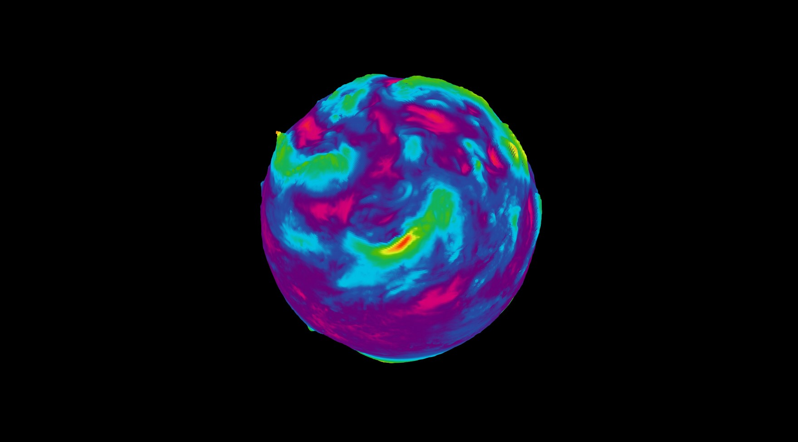
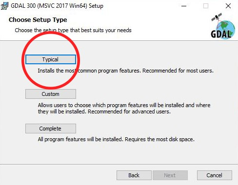
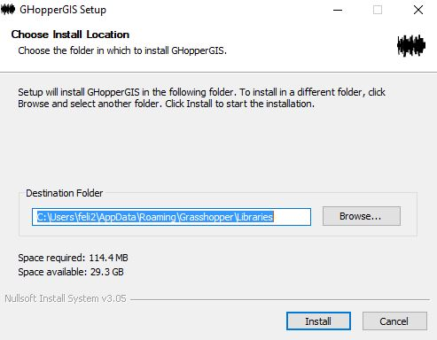

Felipe Gutiérrez
Programmer/Creative
GIS (Geographic Information Systems) according to Wikipedia can capture, save, manipulate and model data from
the real world that are geo-referenced. GIS tools can enable a user to find relationships between layers of data that otherwise would be very difficult to understand or in some cases
impossible.
This tools are used by architects, economists, geologists, artists, engineers, biologists, publicists, among others.
GIS can be used to predict and visualize the weather, model urban growth, 3D/2D model creation of urban and construction sites, they are even used to create art which purpose is to
create awareness of the climatic effects of pollution.
Wind speed, spherical projection

Image created with Rhinoceros3d through the use of the GHopperGIS plugin (developed
for PEM) and visualized by using Tarsier
This image is the visualization of data extracted from the NCEP.
Wind velocity, Cassini projection
 Image rendered in Redshift for Houdini, mesh created by the same process stated before.
Image rendered in Redshift for Houdini, mesh created by the same process stated before.
3D view of Panamá Vieja
 Rhino3d viewport
Rhino3d viewport
Through the data extraction from the GEO MUPA portal, OpenStreetMap and the
ALOS-2 project, a 3D model of buildings sorted by uses, terrain, ways, parks, normative, neighborhood and protected areas.
3D view of calle 82 con 7a and it's surroundings (Bogotá)
 Rhino3d viewport
Rhino3d viewport
3D view of calle 12c con 4a and it's surroundings (Bogotá)
Rhino3d viewport
Colombia, specially Bogotá has a great repository of open data, in which building, ways, curves,
separators, terrain curves, among many others can be found.
Using this information it has been rather easy to construct 3D models of many places in Bogotá, through the use of the GHopperGIS plugin and the GDAL command-line tools.
GHopperGIS is a tight integration of the Open Source GDAL library into Grasshopper.

This library provides a unified model to manipulate raster data (through GDAL) and vector data (through the use of OGR). GDAL includes programming languages "bindings" for C++, C, C# and Python and command-line tools for the translation between formats and data processing algorithms. GDAL is used by Google Earth, ArcGIS, among others.
To install GDAL for Windows:
Go to GISInternals.
Pick according to the PC's architecture and compiler (if unknown and the PC is relatively new: Compiler: MSVC 2017, Arch: x64).
Go into the Downloads link.
Search the site using Control-F: "Generic installer for the GDAL core components."

Download and install using: Typical configuration.

Donwload this batch file, run it as administrator
(click the right arrow on the browser download "Show in folder", once inside the folder, right click on the file and "Run as administrator"). A message will appear (if you have
Windows Defender on) "Windows protected your PC", click on More info.
Click "Run anyway".

The batch file is going to setup the Windows Environment Variables so that GDAL can be runned from the console.
A console window will appear when ran, it will ask for the architecture of the GDAL installation, in this case is 64, but it can be 32 as well. According to the downloaded GDAL version
type on the console: 64 or 32. Hit enter.
Now open a new console (either search for the Command Prompt through the search bar or press the Windows key and the r key at the same time, then type cmd and hit enter) and type "ogr2ogr"

A message like the one above should appear, if it doesn't something went wrong during the installation.
Go to this food4rhino link.
Select the latest iteration of both the Installer and the Examples files, when this tutorial was put together the version was 0.0.1

Check that the path displayed on the "Destination Folder" text box is the one that points to your Grasshopper installation, if not change it accordingly.
Click on the "Install" button, if Windows Defender does the same it did with the batch file (asking if you allow permissions or saying that "Windows protected your PC"), repeat the same process.
Now unzip the Examples folder. Open Grasshopper and find the file OpenGISTerrain.gh it should be at "~\grasshopperscripts\GrasshopperScripts\GrasshopperFiles\Vector\OpenGISTerrain.gh":
Then change left-most boolean toggle to true and pick the file TerrainCurves.shp that should be located at "~\grasshopperscripts\GrasshopperScripts\Data\Vector\Terrain\TerrainCurves.shp"
If everything worked correctly you should be able to see something like this on the viewport:
Here is a tutorial showing the Grasshopper plugin installation:
{kind=link}
{kind=link}